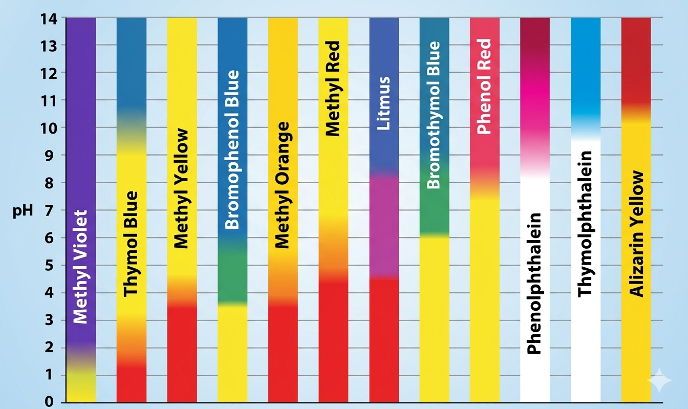
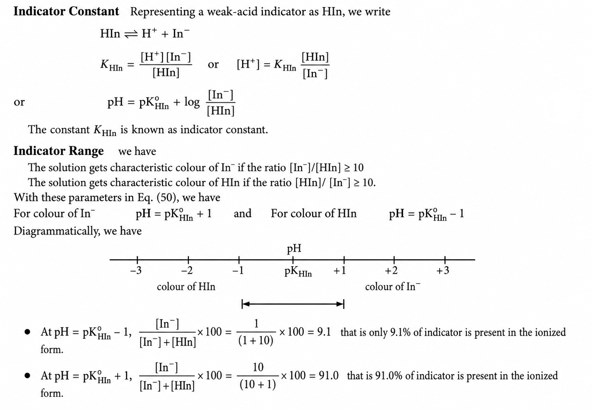
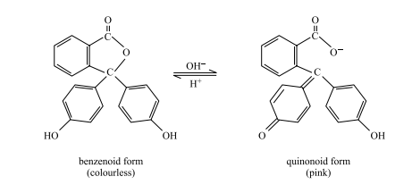
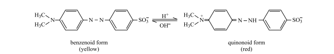
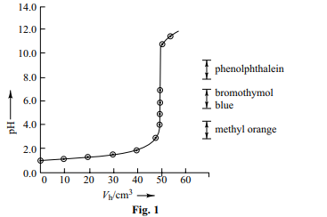
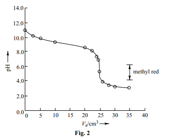
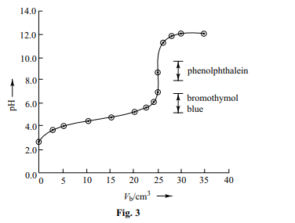

Learn about acid-base indicators, their working principles, structures, color changes, and important applications in chemistry.
Acid-base indicators are substances that change color depending on the pH of the solution. They are widely used in titration experiments and chemical analysis to determine whether a solution is acidic or basic.

Engineered in laboratories for precise analytical work, these change color sharply across highly defined pH ranges.
| Indicator | pH Range | Color in Acid |
|---|---|---|
| Methyl Orange | 3.1 – 4.4 | Red |
| Methyl Red | 4.4 – 6.2 | Red |
| Bromothymol Blue | 6.0 – 7.6 | Yellow |
| Phenolphthalein | 8.3 – 10.0 | Colorless |
Derived from plants, these are readily available organic dyes.
Instead of changing color, these indicators modify their odor based on the acidity of the medium.
Most acid-base indicators are weak acids or weak bases. The acidic and basic forms of the indicator have different colors. According to the Ostwald theory, the ionized and unionized forms exist in equilibrium.

Colorless in acidic medium and pink in basic medium.

Red in acidic medium and yellow in alkaline medium.

| Indicator | Acidic Color | Basic Color | pH Range |
|---|---|---|---|
| Phenolphthalein | Colorless | Pink | 8.2 – 10.0 |
| Methyl Orange | Red | Yellow | 3.1 – 4.4 |
| Litmus | Red | Blue | 4.5 – 8.3 |
Indicators help determine the end point in acid-base titrations.
In the titration of an acid solution versus a base solution, the pH of the solution near the equivalence point changes sharply. The selection of acid-base indicators depends upon the nature of the titration and the pH transition range of the indicator.
The selection of acid-base indicator to locate the end point of a titration is decided by the following factors:
The following is the description of selection of indicators in different types of titrations.
Figure 1 displays the typical titration curve depicting pH of the solution versus volume of base added. A typical range of pH at the equivalence point lies from pH = 3 to pH = 11.
The commonly used indicators are:
Figure 2 displays the typical titration curve depicting pH of the solution versus volume of acid added. The commonly used indicators are methyl red and methyl orange.
Figure 3 displays the typical titration curve depicting pH of the solution versus volume of base added. The commonly used indicators are phenolphthalein and bromothymol blue.
In this titration, the steep rise in pH near the equivalence point does not occur distinctly. Hence, no suitable indicator can be chosen accurately to locate the end point of the titration.

Fig. 1

Fig. 2

Fig. 3
Used to identify acidic or basic nature of unknown solutions.
Used in water treatment, pharmaceuticals, and chemical industries.